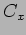

The basic problem is to schedule the observations in the ODB, consequently this is where the focus of the investigation begins. The content of the observing database or pool (ODB) at any time defines the set of observations that are available for scheduling at that time. This pool evolves due to the arrival of new observing requests, modification of existing request (e.g. in light of observing results) and removal of spent requests. These modifications which may be made by observers themselves via a phase2 tool or automatically by external user agents occur in principle continuously. The complexity manifests itself through changes in the amount and severity of competition between observing requests for particular times and over the course of a night in the overall load.
These metrics will be denoted hereforth using the notation  to indicate a complexity metric with subscript, here (x) to denote a specific aspect.